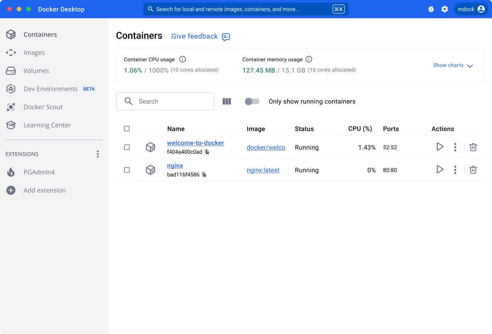
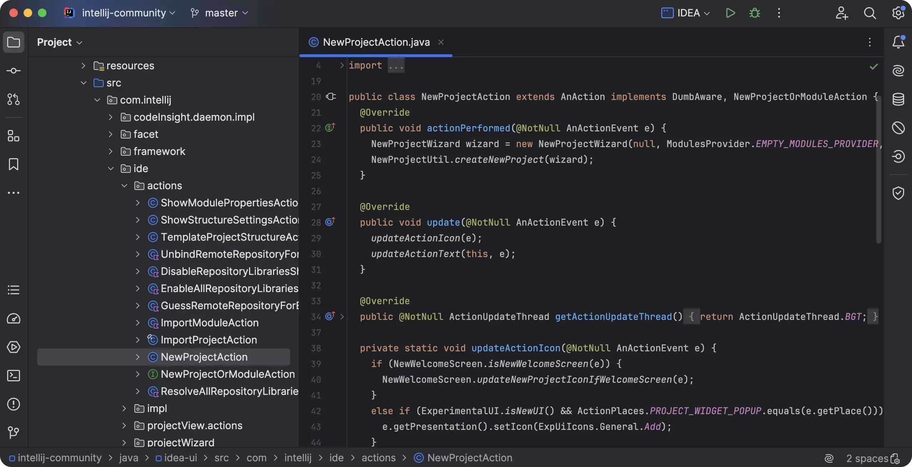
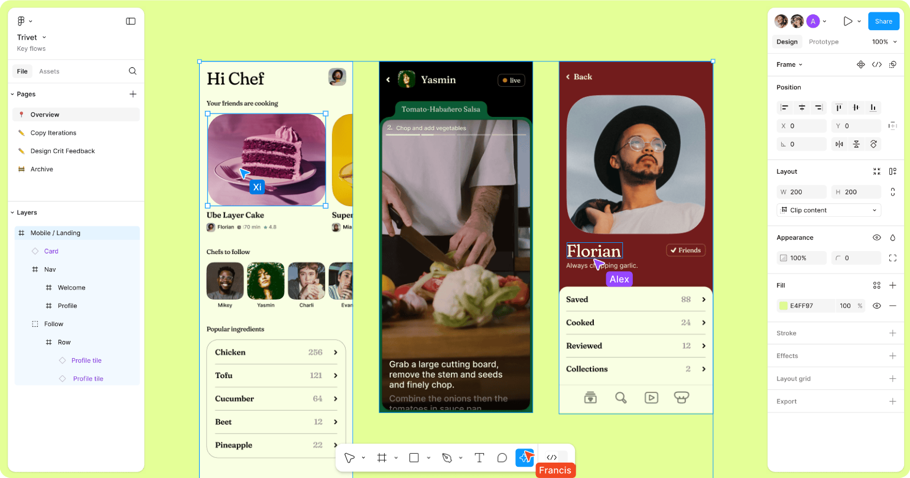
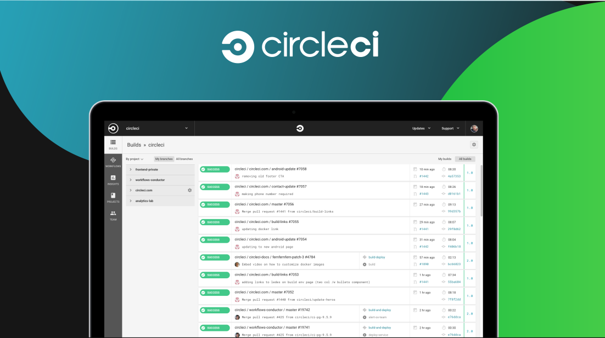
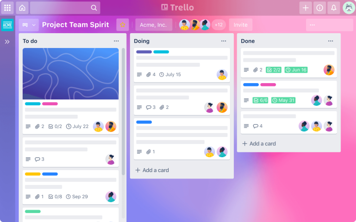

Top 10 Coding Tools for Developers in 2024
Introduction
In the fast-paced world of software development, keeping up with the latest tools can dramatically improve both productivity and collaboration. The right tools don't just streamline workflows—they empower teams to work more efficiently, deliver higher-quality code, and adapt quickly to changing requirements. As we move through 2024, several tools stand out as indispensable for developers, from solo coders to large teams. In this post, we'll explore the top 10 coding tools for developers, detailing their benefits, use cases, and providing practical examples to showcase how to maximize their potential.
1. Visual Studio Code

Visual Studio Code (VS Code) has become the go-to code editor for many developers, thanks to its lightweight design and extensive features. Developed by Microsoft, this open-source code editor offers powerful extensions, a built-in terminal, and Git integration. With its intelligent code completion (IntelliSense) and debugging capabilities, it's a versatile choice for both small scripts and large projects.
Example Code Snippet: Setting up a simple HTML project in VS Code:
<!DOCTYPE html>
<html lang="en">
<head>
<meta charset="UTF-8">
<meta name="viewport" content="width=device-width, initial-scale=1.0">
<title>My First VS Code Project</title>
</head>
<body>
<h1>Hello, VS Code!</h1>
</body>
</html>
VS Code also offers a vast marketplace with extensions for almost any language or framework, making it adaptable to any developer's needs.
Why Use It?
- Multi-language support with a vast extensions library
- Built-in Git integration for seamless version control
- Cross-platform and open-source
2. GitHub Copilot
GitHub Copilot is an AI-powered code completion tool that suggests code as you type, significantly accelerating the development process. Copilot, powered by OpenAI, is designed to assist in writing functions, automating repetitive code patterns, and reducing syntax errors. It integrates directly into popular IDEs like VS Code and IntelliJ.
Example: Writing a Python factorial function with GitHub Copilot:
def calculate_factorial(n):
if n == 0:
return 1
else:
return n * calculate_factorial(n - 1)
GitHub Copilot analyzes your context and offers real-time suggestions, making it a powerful assistant for writing code faster and smarter.
Why Use It?
- Automates repetitive tasks and suggests context-aware code
- Supports multiple programming languages
- Speeds up the development process and reduces errors
3. Postman

Postman is a platform for developing, testing, and managing APIs. It simplifies the process of making HTTP requests, examining responses, and sharing API documentation. Whether you're developing a backend system or integrating with third-party APIs, Postman provides an intuitive interface to manage everything.
Example: Sending a GET request to an API:
- URL : https://jsonplaceholder.typicode.com/posts
- Method : GET
[
{
"userId": 1,
"id": 1,
"title": "sunt aut facere repellat provident occaecati excepturi optio reprehenderit",
"body": "quia et suscipit\nsuscipit..."
},
...
]
Postman's support for automated testing and collaboration makes it ideal for teams that need to maintain API reliability and share endpoints effortlessly.
Why Use It?
- Simplifies API development, testing, and documentation
- Supports collaboration by sharing collections and environments
- Automates testing with collections and scripts
4. Docker
Docker revolutionized development by enabling containerization. By packaging applications with all their dependencies into containers, Docker ensures that code runs consistently across different environments, from development to production.
Example: Simple Dockerfile for a Node.js app:
# Use the official Node.js image FROM node:14 # Set the working directory WORKDIR /app # Install app dependencies COPY package.json ./ RUN npm install # Bundle app source COPY . . # Expose port and start the app EXPOSE 3000 CMD ["node", "server.js"]
Docker allows teams to create reproducible environments, simplifying testing and deployment while minimizing "works on my machine" issues.
Why Use It?
- Ensures consistency across development and production environments
- Lightweight and fast compared to traditional VMs
- Facilitates microservices architecture and DevOps workflows
5. Jupyter Notebook

Jupyter Notebook is an open-source platform popular in data science for mixing live code, equations, and visualizations in one interactive environment. Whether you're working on machine learning models or data analysis, Jupyter enables seamless documentation alongside your code.
Example: Simple graph in Python using Jupyter:
import matplotlib.pyplot as plt
x = [1, 2, 3, 4, 5]
y = [2, 3, 5, 7, 11]
plt.plot(x, y)
plt.title("Sample Plot")
plt.xlabel("X-axis")
plt.ylabel("Y-axis")
plt.show()
Its ability to combine text with live code makes it an excellent tool for creating detailed reports, data visualizations, and even interactive tutorials
Why Use It?
- Ideal for data analysis, machine learning, and research
- Combines live code with rich text, visualizations, and markdown
- Supports collaboration through shared notebooks
6. JetBrains IntelliJ IDEA
IntelliJ IDEA is a feature-rich IDE from JetBrains that excels in Java development but supports a wide range of other languages and frameworks. Its intelligent code completion, debugging tools, and version control integration make it one of the best all-around IDEs.
Example: A simple Java program in IntelliJ:
public class HelloWorld {
public static void main(String[] args) {
System.out.println("Hello, IntelliJ IDEA!");
}
}
With built-in Git integration and extensive plugin support, IntelliJ helps developers manage complex projects with ease.
Why Use It?
- Robust refactoring and smart code completion
- Supports multiple languages and frameworks
- Strong integration with version control systems
7. Figma
Figma is a cloud-based design tool that enables real-time collaboration between developers and designers. Whether you're creating wireframes, prototypes, or fully realized UI designs, Figma allows everyone to work together in one place.
Example: Designing a simple interface and sharing it with developers for feedback.
Figma also includes powerful prototyping features, allowing developers to visualize user flows before writing any code, making it easier to collaborate on the overall design vision.
Why Use It?
- Real-time collaboration for teams
- Prototyping tools for designing and testing UI/UX
- Easy handoff between designers and developers with design-to-code plugins
8. Slack
Slack is a messaging and collaboration platform that enables development teams to communicate efficiently. With channels, direct messaging, and integrations with other tools like GitHub, Jenkins, and Trello, it centralizes communication and ensures smooth collaboration.
Example: Use Slack channels to organize team communication:
- #project-alpha for project discussions
- #dev-updates for daily development updates
Slack supports file sharing, message threading, and bot integrations to streamline workflows and keep the team connected.
Why Use It?
- Centralizes communication and integrates with numerous tools
- Supports file sharing and real-time collaboration
- Keeps conversations organized with channels and threads
9. CircleCI
CircleCI is a CI/CD tool that automates the build, test, and deployment processes. By integrating with version control systems like GitHub, it helps developers catch bugs early and release code quickly.
Example: Simple CircleCI config file for Python:
version: 2.1
jobs:
build:
docker:
- image: circleci/python:3.8
steps:
- checkout
- run: pip install -r requirements.txt
- run: python -m unittest discover
CircleCI helps teams maintain high-quality code and speeds up the delivery pipeline by automating repetitive tasks.
Why Use It?
- Automates testing and deployment
- Supports parallel builds to speed up pipelines
- Integrates with popular VCS like GitHub and Bitbucket
10. Trello
Trello is a visual project management tool that organizes tasks into boards, lists, and cards. It's perfect for development teams following Agile methodologies, allowing for quick task prioritization and progress tracking.
Example: Trello board setup for an Agile project:
- To Do, In Progress, and Done lists
- Cards for individual tasks with comments, attachments, and deadlines
Trello's simple yet flexible interface makes it an ideal tool for managing projects and keeping the team aligned.
Why Use It?
- Simple, visual project management
- Flexible, with integrations for other development tools
- Great for Agile and Scrum workflows
Conclusion
In 2024, these tools have proven indispensable for developers looking to improve their productivity, collaboration, and code quality. Whether you're writing code, testing APIs, or managing projects, adopting the right tools is crucial to staying ahead in an ever-evolving industry. By incorporating these top 10 tools into your workflow, you'll be better equipped to tackle any coding challenge that comes your way.
Additional Resources
For those looking to dive deeper into any of these tools, here are some useful links: